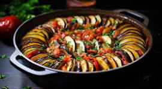

Ratatouille recipe

Description: Ratatouille is a classic Provençal dish made with a medley of summer vegetables, including eggplant, zucchini, bell peppers, tomatoes, and herbs. It’s a vibrant, healthy dish that can be served as a main or a side, and it’s great warm or at room temperature.
Ingredients
- 1 medium eggplant, diced
- 2 zucchinis, sliced
- 1 bell pepper, chopped
- 1 onion, chopped
- 2 cloves garlic, minced
- 4 ripe tomatoes, chopped (or 1 can of diced tomatoes)
-
- 2 tablespoons olive oil
- 1 teaspoon dried thyme
- 1 teaspoon dried basil
- Salt and pepper to taste
- Fresh basil for garnish (optional)
Steps
- Prep the Vegetables: Salt the diced eggplant and let it sit for about 30 minutes to draw out moisture. Rinse and pat dry.
- Sauté the Aromatics:In a large skillet, heat olive oil over medium heat. Add the chopped onion and garlic, sautéing until translucent.
- Cook the vegetables Add the eggplant, bell pepper, and zucchini to the skillet. Cook for about 5-7 minutes until slightly softened.
- Add Tomatoes and Herbs:Stir in the chopped tomatoes, thyme, basil, salt, and pepper. Reduce the heat and let it simmer for 20-25 minutes, stirring occasionally, until all the vegetables are tender.
- Serve:Garnish with fresh basil if desired. Serve warm or at room temperature, either as a main dish or a side